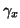
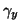
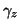

Box Keyword: .<Friction>
This box contains the friction coeffecients for all the components of all the atoms is the system for the stochastic thermostat, and is only read in if the stochastic integration algorithm is selected in the MDcontrol box. This box must contain an entry for each atom in the system, in the order given in the atomic coordinate box. Each entry constists of an integer flag followed by the x, y and z components of the friction coefficient for that atom. If the flag is set to 0, the atom will not be conected to the stochastic thermostat, and its motion will be integrated using the standard Verlet leapfrog algorithm, if the flag is set to 1, the atom will be connected to the thermostat. E.g.:
1


